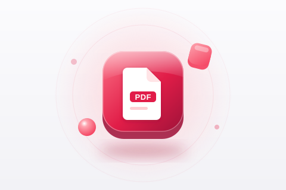

Free PDF to Word online — edit right away
Need to edit a contract, syllabus or report stuck in a PDF? Convert the PDF to Word (DOCX) and open it in Microsoft Word or Google Docs.

PDF is convenient for sending and printing because it looks the same on every device, but it is hard to edit. When you need to update a figure in a contract, revise an outline or reuse a section of a report, the fastest way is to convert the PDF to Word (DOCX) and edit it in Microsoft Word, Google Docs or LibreOffice.
When should you convert PDF to Word?
- To fix typos or update figures or dates in a document that only exists as a PDF.
- To reuse the content of an old lesson plan, report or CV for a new version without retyping it from scratch.
- To extract text from a scanned PDF (photographed or scanned papers) so it can be edited and searched.
Text PDFs vs. scanned PDFs: what's the difference?
PDFs with a text layer ("text" PDFs)
These are PDFs exported directly from Word, Excel or accounting software, so you can select and copy every word.
For this type, the tool reads the text layer directly, so results are fast and Vietnamese text usually matches the original.
Scanned PDFs (image PDFs)
These are PDFs created from a scanner or photos; each page is really an image, so you can't select the text.
To get text from this type, the tool has to run optical character recognition (OCR) on every page. OCR is slower and can misread text when the image is blurry, skewed, or has stamps or signatures over the text.
Quick check: open the PDF and try selecting a line. If you can select the text, it's a text PDF; if you can only select the whole image or nothing at all, it's a scan.
Step-by-step guide to converting PDF to Word
- Open OneTool's PDF to Word.
- Drag and drop the PDF file into the "Drop a PDF here" box, or click "browse your device" to choose a file.
- Under "Scans / text images", keep "Auto (recommended)" if you're not sure what type of file you have.
- Click "Convert to Word" and wait for the progress bar to finish.
- Preview the text in the Result panel, along with the number of pages and characters extracted.
- Click "Download Word" to save the .docx file, or "Copy text" if you only need to paste the content somewhere else.
Choose the right recognition mode
- Auto (recommended): pages that already have a text layer are read directly, and pages with almost no text automatically switch to image recognition.
- Always OCR images: runs recognition on every page; useful when a PDF has a text layer but copied text comes out with garbled characters.
- Only use existing PDF text: skips image recognition to run as fast as possible; best for pure text PDFs.
Text PDFs usually convert almost instantly, while scans take a few extra seconds per page.
What is kept and what needs fixing
The tool prioritizes giving you editable text rather than trying to copy the PDF's exact look.
Kept
- Text content, grouped into paragraphs based on the spacing between lines.
- Headings: lines with a much larger font size than the body text become Headings in Word.
- Page breaks: each PDF page starts on a new page in the Word file.
Not kept or needs manual fixing
- Tables: cell contents come out as plain text, without the table grid.
- Images, logos, signatures, stamps: are not included in the Word file.
- Fonts and formatting: body text uses Times New Roman, justified; the original text colors, bold and italics are not kept.
- Multi-column layouts: two-column text such as newspapers and magazines may have lines from both columns mixed together.
- Headers, footers, page numbers: become ordinary paragraphs repeated on every page.
Quick fixes in Word after converting
- Change the font for the whole document: press Ctrl+A and choose the font you want, for example Arial or your organization's standard font.
- Remove repeated headers and footers: use Ctrl+H, paste that exact line into the Find box and replace it with nothing.
- Rebuild tables: select the data lines, choose Insert → Table → Convert Text to Table, then split columns by spaces or tabs.
Tips for scanned Vietnamese documents
- Resolution: if you scan it yourself, choose about 300 dpi; images that are too small make Vietnamese tone marks and accents easy to misread.
- Shoot straight on: hold your phone parallel to the page and avoid angled shots that make the lines of text curve.
- Good light, no shadows: shoot in even light and avoid shadows from your hand or phone falling on the text.
- Double-check diacritics: after converting, reread easily confused letters such as "ơ/ô" and "ă/â" and the hỏi and ngã tone marks, especially in names and amounts of money.
If you only have a photo and no PDF, you can use Image to Text (OCR) directly instead of combining images into a PDF and then converting.
Which tool should you use for which document?
| Your document | Goal | Best approach |
|---|---|---|
| Contracts, reports, lesson plans as text PDFs | Edit the text | PDF to Word, Auto mode |
| Multi-page scanned documents | Get text to edit | PDF to Word, Always OCR images mode |
| Statements, payrolls, bank statements as PDFs | Keep the rows and columns for calculations | PDF to Excel |
| Photos of transcripts, receipts | Get tables into Excel | Table OCR to Excel |
| Photo of a page of text, screenshot | Quickly copy a few paragraphs | Image to Text (OCR) |
| A finished, edited Word file | Send it back as a PDF | Word to PDF |
Privacy when converting
OneTool's PDF to Word tool reads and converts the file right in the browser on your device. The website only downloads the libraries for processing PDFs, creating DOCX files and recognizing text; your PDF's content is not sent to OneTool's server.
That means you can convert contracts or internal documents without creating an account.
Common errors and how to fix them
Broken fonts or missing diacritics in Vietnamese text
Some older PDFs use Vietnamese fonts like TCVN3 or VNI, or embed fonts with the wrong encoding, so the text layer inside contains strange characters even though it looks right on screen. In that case, run the conversion again with "Always OCR images" so the tool reads from the page images instead of the broken text layer.
Tables broken into lines of text
This is a known limitation because the tool doesn't rebuild table grids. If the document is mostly data tables, use PDF to Excel; if it has only one or two small tables, use Word's Convert Text to Table feature as described above.
"Couldn't read any text in the file" message
This message appears when you choose "Only use existing PDF text" for a scan that has no text layer. Switch to "Auto" or "Always OCR images" and convert again.
Password-protected file won't open
The tool has no password field, so it can't read PDFs locked with an open password. If you have rights to the document, open it in a PDF reader, enter the password and save a copy without a password before converting.
File too large or too many pages
Each conversion accepts files up to 80 MB and processes at most the first 80 pages; when the file is truncated, the status line shows exactly how many pages were processed. For longer documents, use Split PDF to divide it into several parts and convert them one at a time.
Frequently asked questions
Is converting PDF to Word on OneTool free?
Yes. The tool is free and doesn't require you to sign up for an account.
Is my PDF file uploaded to a server?
No. The file is read and converted to DOCX right in the browser on your device; the page only downloads the processing libraries and doesn't send the PDF's content to OneTool's server.
Does the Word file keep the same layout as the PDF?
Not entirely. The tool keeps text, paragraphs, headings and page breaks, but tables, images, multi-column layouts and the original font formatting need to be fixed in Word.
Can it convert scanned Vietnamese PDFs?
Yes. The tool recognizes Vietnamese and English text on scanned pages; accuracy depends on how sharp, straight and well lit the scan is.
Why is the whole Word file in Times New Roman?
The tool sets the body text to Times New Roman, a font that displays Vietnamese well on most computers. You can press Ctrl+A in Word and choose another font for the whole document.